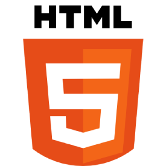
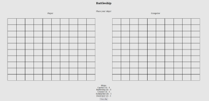
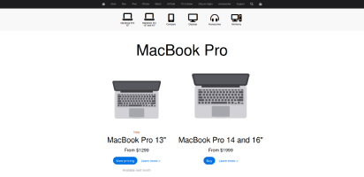

A bit about me
Current skills

While one may be able to get by with just the basics of the markdown language, I found that HTML has lots to provide such as ways to organize code through semantic tags and built-in functionality that can often save time from writing JS.
My tool of choice for webpage styling is often plain CSS. I have a good grasp of its most useful features, including Flexbox and Grid. In addition, when a project gets more complex, I'll use the SASS preprocessor to modularize the style code.
JavaScript is the first programming language I developed proficiency in and I find it to be a rather fun language to work with. I use the modern ES6 syntax and its various features, such as arrow functions, ternary operators, modules, etc.
My current programming environment is in a virtual machine using Linux OS. Through the terminal I use the basic Git workflow of add/commit/push, and have used other useful commands such as git stash.
During my time in school I was involved in several group coding projects that required the use of GitHub, so I am familiar with things like using branches, merging, and pull requests. We also were making use of Agile practices and utilized project management tools such as Trello and the GitHub Issues system.
My projects

A recreation of the popular game Battleship. This was developed with a test driven development (TDD) workflow, using the Jest testing framework.

A product landing page recreated using HTML and SASS paired with the BEM naming convention to make more code readable. The site is also fully responsive for the three standard sizes (desktop, tablet, and mobile) by using media queries.